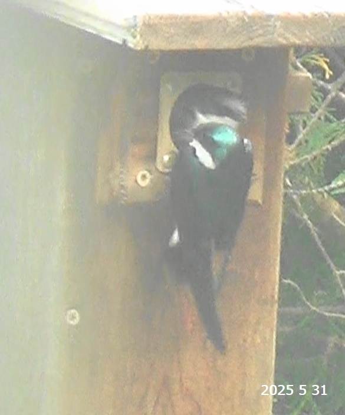

Keeper and Leaf
Chronicles from Spring 2025

In March, when the air was just beginning to warm and the trees had not yet forgotten winter,
the first swallows arrived - gliding in over the glassy waters of Tellico Lake, their wings slicing through
cold wind and sky.
These early travelers came from the warm edges of the continent - Florida marshes, the Gulf Coast, and
the far inland skies of Mexico - pausing to rest, feed, and gather over water, where insects had begun to stir.
But Keeper and Leaf were not among them.
They came later, in April, when the hills around the lake had turned a soft, full green.
The irises stood on the edge of blooming. The tall oaks and poplars still held their buds tight, waiting for one more cue of warmth.
The pair arrived quietly, circling low over a cluster of birdboxes—tucked not in open roadside fields like those claimed early by bluebirds, but hidden behind the houses or along the woodland edge, where moss crept between roots and the light filtered softly through.
Had Keeper nested here last year, reclaiming a familiar site?
He chose the box at the edge of what used to be a maple - now bare and stark but still sturdy and strong, holding firm against time. This was Maple Nest Retreat, and though the tree that named it had lost its leaves forever, it stood tall, offering its arms.
He chose the box. She chose him.
Keeper, swift and attentive, seemed a wing-length behind his companion. He was watching, guarding, holding the rhythm of the flight. His gentle mate, graceful and intentional in every motion, was Leaf, though her name had not yet been spoken aloud.
Keeper and Leaf were circling low above the quiet yard as if listening for a whisper from the land. For a few days, they came and went. Keeper watched. Leaf explored. Then, with a flit and a flick of her wings, she chose it. And Keeper stood watch as the work began.
Together, they brought threads of life back to the wooden hollow. Bit by bit, they wove it: dried grasses, soft twigs, whispers of the field. But something was missing - something tender, something that would say this nest is home. And so, watching from below, a silent helper brought a few small white feathers near the roots - soft plumes of dawn, taken from a couch pillow and placed gently in offering.
Leaf accepted them. She lifted each feather carefully in her beak, carried them into the nest, and tucked them with elegant care. They curled softly within, forming little clouds of comfort. And then, unexpectedly, she brought a single dry leaf—a peculiar choice for a swallow. Was it meant as a cover for future eggs, or simply a quiet signature of her name? No one could say.
Then came the stillness. A pause. As if the world held its breath. Storms rolled in - thunder that shook the ground, rain that carved rivers in the dirt. But the nest held firm. And one evening, between lightning and the hush of falling rain, the watcher saw them again.
There they sat - Keeper and Leaf, side by side on a bare maple branch, close to the nest they'd crafted. Not flying. Not building. Just being. A silhouette of devotion against the grey.
It was only the beginning. But already, it was full of sky.
Then they disappeared once more. But the silent observer found three little white eggs nestled safely in the box.
On the evening of May 4, just before sunset, Leaf returned and stayed through the night, Keeper watching quietly from a nearby branch, a sentinel at dusk.
Days passed.
May 8 brought heat - an unexpected swelter—and a quick check revealed five little eggs,
resting like pearls among the straw.
Then came chaos.
On that same day, May 8, as the heat rose sharply, a violent storm tore through the valley with hail and fierce winds. On May 10, the ground itself shifted—a magnitude 4.1 earthquake struck just thirteen miles away. The weather turned wild and restless: sudden cold snaps, tornado watches, winds that whistled through the hills like warnings. Yet Keeper remained—vigilant and resolute.
Leaf, though trying to be brave, seemed shaken.
Was she fleeing the box when thunder rolled too close?
Still, the nest held firm.
On May 23, the pair was seen again on the bare maple limbs. Something was brewing.
The time felt near.
At the hottest hour of the afternoon,
while both swallows vanished briefly into the sky,
the observer peered into the box.
Still five eggs.
Still waiting.
And yet - the nest was breathtaking.
Leaf, the quiet artisan, had lined it with elegance.
Somewhere, somehow, she had found striped black-and-white feathers,
likely from a passing Black-and-white Warbler.
She had woven them in, giving the nest a quiet elegance.
Her taste was refined, even in the smallest touches.
But had she lingered too long chasing these treasures, leaving the eggs vulnerable to cold or chaos?
May 24 brought renewed urgency. Keeper, alert and purposeful, darted between sky and nest carrying insects—not yet for hatchlings, but for Leaf, who had begun to stay put. Her patience grew. Keeper tended to her now, slipping food into the box, keeping her nourished as she sheltered their shared future.
Then came the surprise.
By May 28, the clutch had grown - eight eggs now nestled in the downy cradle, a symphony of feathers and hope. Leaf’s artistry flourished, adding iridescent blues and bold Tree Swallow plumes, each one like a stitched promise in her soft architecture.
June arrived heavy and hot. On the second day, the temperature climbed to 82°F - nothing extreme, but the swallows panted, visibly strained. Keeper gaped for breath on a high perch. Leaf mirrored his anxiety, leaving and returning, unsettled. It wasn’t just the heat—something deeper stirred. They were close now. Their movements sharpened, purposeful. Yet tension ran through each wingbeat.
On June 3, five original eggs were missing.
Had they been lost? Buried deep in feathers? Leaf, startled by a soft sound,
fled the nest in alarm, hastily covering her four newly laid,
neatly arranged eggs with trembling care.
Her feathers fluffed, eyes half-closed, she seemed worn by the weight of
wanting - desperate to experience the fullness of motherhood.
But she stayed.
They both stayed.
Keeper took the lead when needed - offering food, rotating eggs, watching from the maple’s bones.
Leaf no longer fled during storms. She had changed. They had changed. Together they learned how to endure.
June 14 crackled with anticipation. Keeper entered the box. Leaf circled above, calling, fluttering - restless.
Something was coming.
And then, joy.
On June 16, during a brief lull in the skyward traffic, the observer saw them: four tiny hatchlings, barely visible amid the feathers. Three raised their heads in silent hunger, one still and dreaming. They had arrived. On Father's Day, June 15, Keeper had become a father. A fitting gift for a guardian so devoted.
The days that followed were a blur of motion—endless flights for food, careful cleaning of the nest, quiet songs in the dusk. They were tireless. They were whole.
But the trials were not done.
The days grew longer. The sun climbed higher.
As the summer solstice passed - when the sun shone most directly on this little corner of the world - the heat returned with vengeance.
A high-pressure ridge scorched the land. Temperatures surged into the mid-90s.
With dew points in the 70s, the heat index soared above 105°F. Heat advisories blanketed the region.
The air shimmered. The nest box baked like an oven.
Still, they stayed.
Keeper and Leaf took turns shielding their chicks from within, wings spread slightly.
Watching, ventilating and protecting. They didn’t leave the nest unguarded for more than a minute.
Every return brought food, and every visit was a promise: we are here.
On June 24, a milestone: one brave chick appeared at the nest
entrance. Just 9 days old, too young to fledge, but strong, alert, and eager for food.
The parents fed him tirelessly. The others stayed hidden. Were they safe? Healthy?
It was hard to tell. But each day, a small face returned to the entrance, wide-eyed and waiting.
Please, the silent observer thought, just don’t jump - not yet.
A quiet worry lingered: was it always the same chick? Were the others simply more cautious,
or struggling silently beneath the feathers?
Then came the morning of July 1.
At 7:30 AM, one chick lay sleeping peacefully near the entrance. The observer stepped out for a morning run - quietly, carefully, far from the nest.
And then, from the corner of the yard, three swallows lifted into the sky.
One. Two. Then three.
They circled low over the house - quick, purposeful, and knowing. It felt like a farewell. And then, without hesitation, they turned southeast—toward the lake.
The nest was empty.
Inside: a few beetle wings, a wisp of down. No broken shells. No unhatched eggs. Just a smooth, worn hollow - the final signature of a story completed.
Their panting in June, their restless movements - it all made sense now.
A double clutch. Nine eggs. Five gently removed. Four healthy fledglings. Gone by Day 17—soaring early, strong, and whole. A triumph.
And something else had gone, too.
The dry leaf - Leaf’s quiet signature, once nestled at the center - had vanished. Perhaps carried out with the unhatched eggs. A soft symbol of inexperience shed, of the transformation she'd undergone. Of who she had become.
They’ll linger now near the lake, where the air is rich with insects and the open skies offer safe space to practice their flight. In just a few weeks, the swallows will gather with their young - rising in swirling flocks above golden fields and glassy water, tracing invisible paths southward. Back to the marshes and coasts. Back to rest.
The yard is quiet now. Still. Not lonely - just changed.
Because they were here.
Because they will return.
Because the bare maple branch - old, gnarled, once thought lifeless - has sprouted something new.
A single shoot.
A young branch with tender, red maple leaves.
❈•°❉°•❈•°❉°•❈≋≋≋❀⋯✧❂✧⋯❀⋯✧❂✧⋯❀≋≋≋❈•°❉°•❈•°❉°•❈

{kind=link}
{kind=link}
{kind=link}